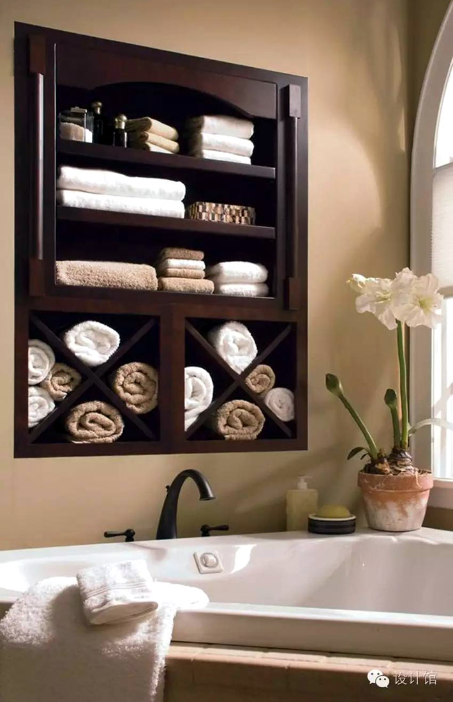

Балкон: перевод на английский, примеры, транскрипция, произношение.
2020.11.20 17:07
Регистрация
Вход
Главная Упражнения Редактор Перевод примеров Дополнения •
Балкон - перевод на английский с примерами
balcony, porch, gallery
- balcony |ˈbælkənɪ| — балкон , балкон первого ярусабоковой балкон — side balcony
наружный балкон — exterior balcony
открытый балкон — air bath balcony
смотровой балкон — access balcony
подвесной балкон — suspended balcony
нависающий балкон — projecting balcony
выходить на балкон — come out into the balcony
балкон второго яруса — the third balcony
аварийный выход через балкон — balcony exterior exit
балкон первого яруса; второй ярус — the second balcony
балкон для эвакуации; запасной балкон — escape balcony
ещё 8 примеров свернуть - porch |pɔːrtʃ| — крыльцо , веранда , подъезд , терраса , балкон , портик , паперть
- gallery |ˈɡælərɪ| — галерея , хоры , галерка , балкон , штольня , портик , штрек
билет на балкон — ticket for the gallery
Смотрите также
кормовой балкон — after catwalkоткидной балкон — hinged board
балкон буровой вышки — runaround platform
ограждённый балкон для труб — enclosed pipe racking platform
закрытый балкон аэровокзала — terminal jetty
балкон, обращённый в южную сторону — ante-solarium
балкон для размещения красочной секции — color deck
большая стеклянная дверь на балкон или в сад — patio door
жилой дом с входом в квартиры через общий балкон — balcony-access apartment house
застеклённая терраса; застеклённый балкон; солярий — sun-porch
срезы на раковинах; кормовые выступы; кормовой балкон — stern walk
балкон адмиральского помещения; галерея на корме корабля — admiral's walk
балкон вокруг средних полатей; полати вышки; балкон вышки — derrick platform
балкон буровой вышки для работы с четырёхтрубными свечами — fourble board
балкон для работы с лифтовыми трубами; полати верхового рабочего — racking board
балкон вокруг средних полатей; балкон буровой вышки; балкон вышки — derrick working platform
балкон для верхового на вышке; отказ принять решение; заговаривание зубов — run-around
опорная платформа подсвечника вышки; балкон для верхового на вышке; полати — racking platform
ещё 8 примеров свернуть
Родственные слова, либо редко употребляемые в данном значении
- upper circle — верхний круг- family circle — семейный круг, круг семьи
Главная Упражнения Регистрация Вход Адаптированные книги Справка Oтзывы, предложения, вопросы
WooordHunt ваш помощник в мире английского языка ×
